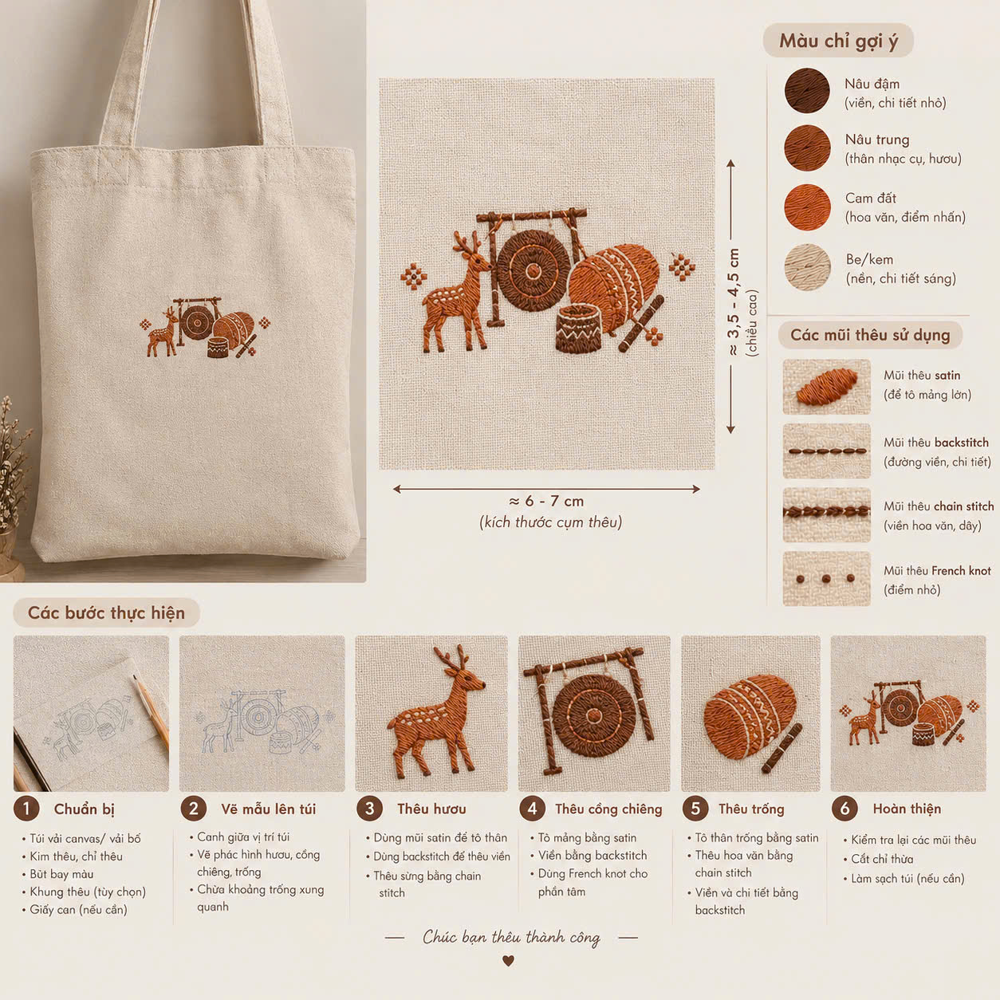
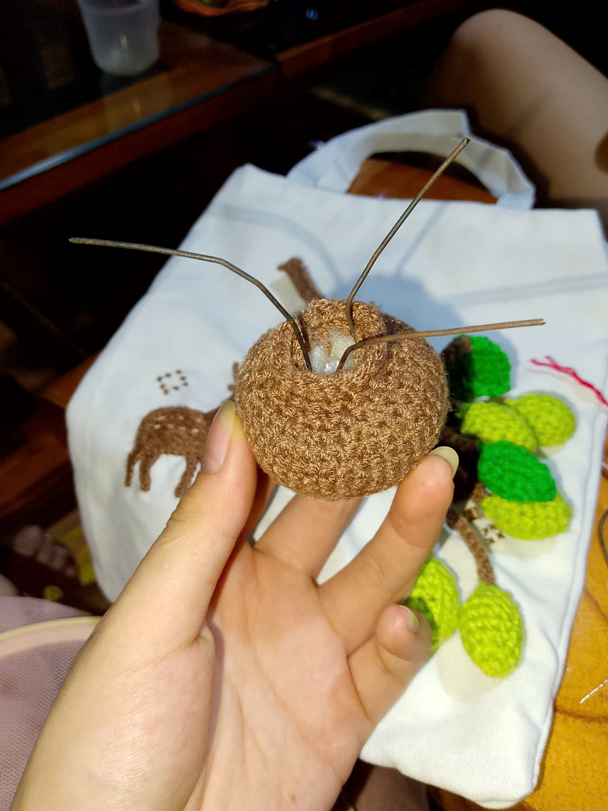
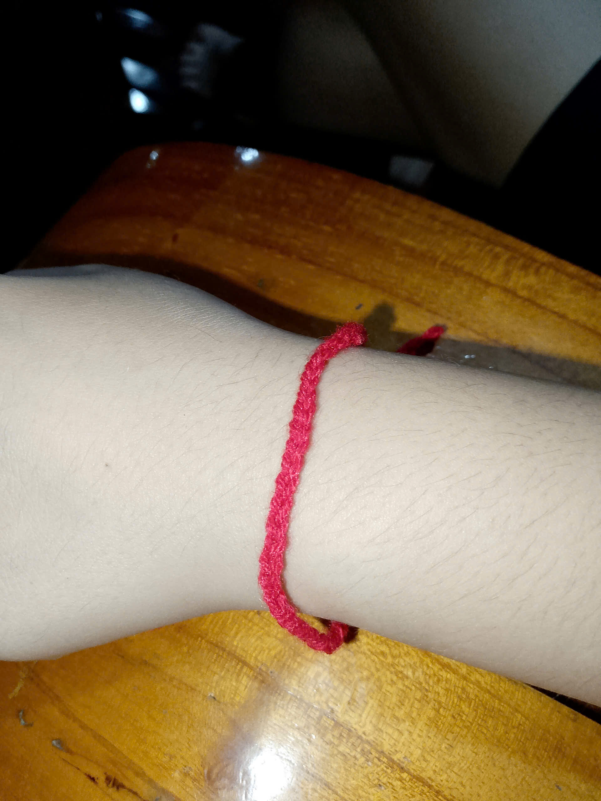
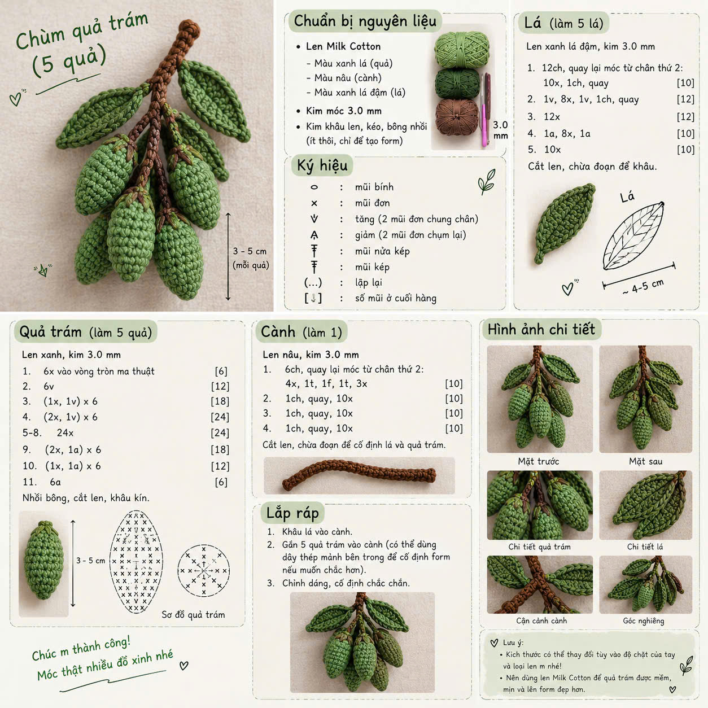
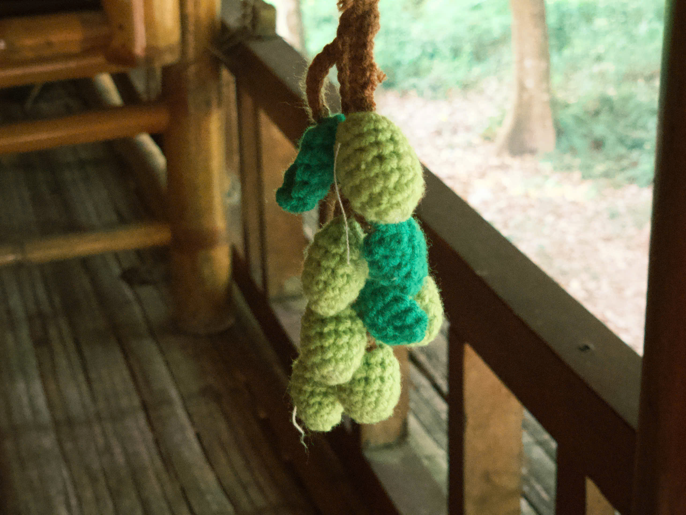
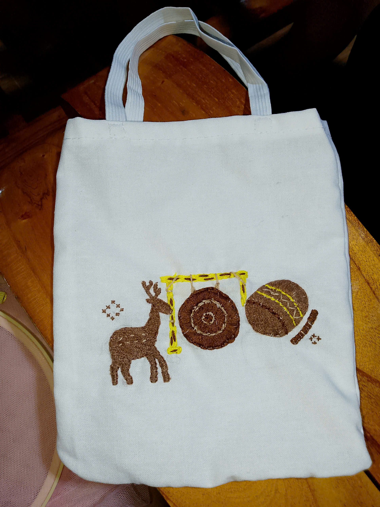
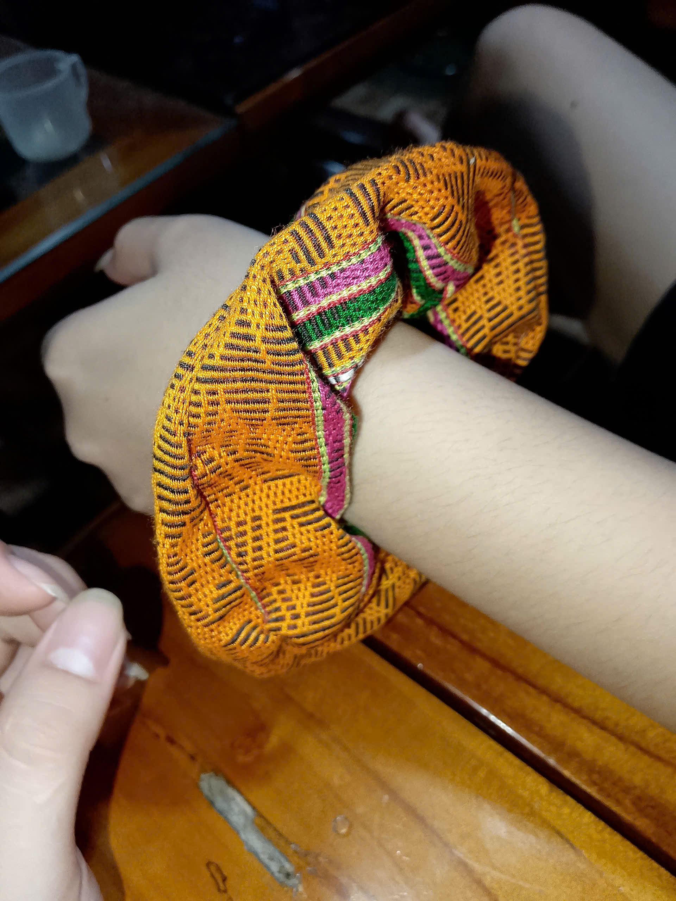
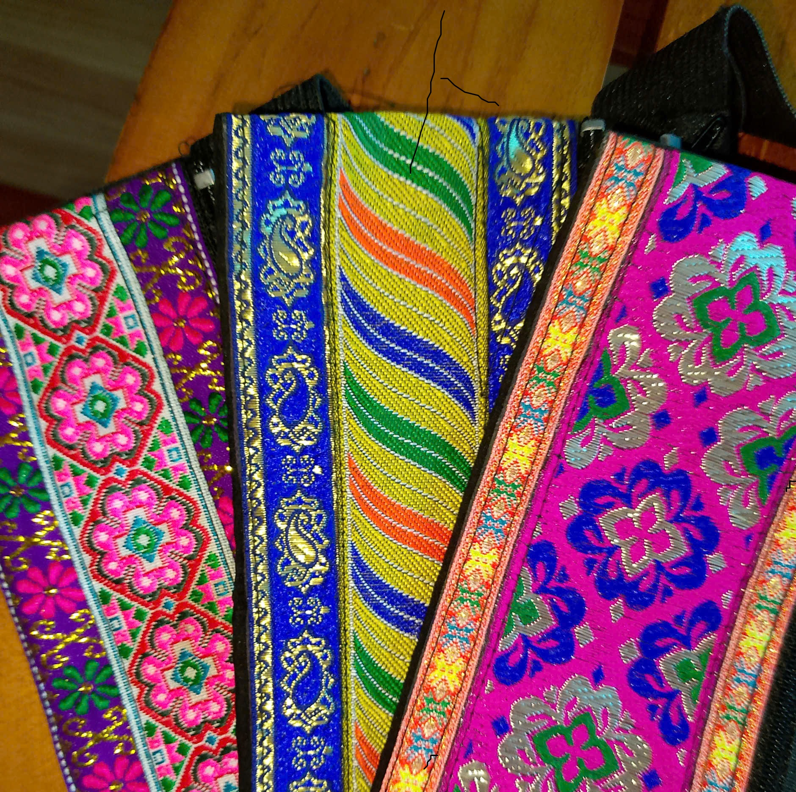

×

Tên Tác Phẩm
Câu chuyện văn hóa sẽ xuất hiện ở đây...
Sự kết hợp tinh tế giữa nghệ thuật thêu len hiện đại và hoa văn thổ cẩm truyền thống Xứ Mường Bi








Câu chuyện văn hóa sẽ xuất hiện ở đây...